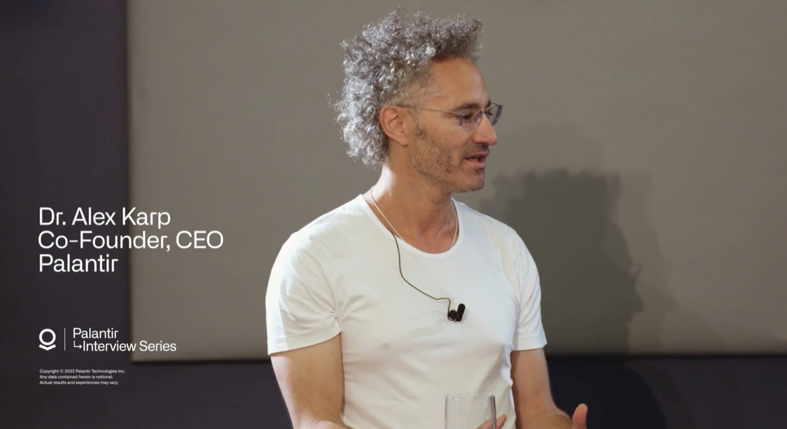

Software Built and Tested in Crises
At Palantir we're in the business of working with companies to solve urgent and critical challenges.
See how below.
Leveraging Data from the Front Lines
Palantir is honored to deploy its technology in the private and public sectors to help organizations make mission-critical decisions when they matter most.
Humanitarian Aid
Data Makes A Difference at the World Food Programme
The World Food Programme (WFP) operates one of the most complex, consequential supply chains on Earth — deploying thousands of trucks, aircraft, and ships to deliver life-saving assistance to over 100 million people each year. Palantir has the privilege of partnering with the WFP to tackle some of its most critical challenges.
Pandemic Response

Powering a Pandemic Response in the US, UK, and Beyond
Organizations across the healthcare system are currently deploying Palantir to accelerate and strengthen their ability to combat the COVID-19 outbreak, from tracing the spread of the virus to accelerating production of critical medical supplies.
Power Grid Safety

Pacific Gas and Electric Leverages Data for Wildfire Prevention
To operate a safe and reliable energy system, PG&E must understand and manage the ever-changing risk of wildfires during California’s fire season. The utility turned to Palantir for a central hub that could make sense of the 8-10 billion data points it collects every single day and optimize how it runs its grid.
Global Instability and Software’s Opportunity

Alex Karp and Stanley Druckenmiller discuss the rapidly changing geopolitical and economic climate, and why our products were built to deliver in times of disruption.
↳ Foundry

The Operating System Built and Tested in Crises
Foundry was built and tested in crises when time matters most. Foundry offers everything from data integration to applications that power critical decision-making.